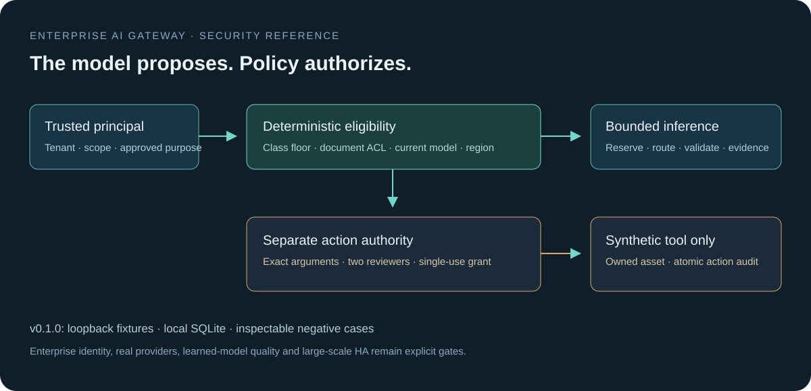

Governed model access
Trusted tenant and scope, reviewed purpose, document ACL, classification floor and current model eligibility before price or fallback.
Inspect authorization →Govern model access. Constrain agent authority. Connect every control to evidence that an executive, researcher or engineer can inspect.
Text-only local fixtures today. Enterprise identity, real providers, learned-model evaluation and large-scale availability are explicit next gates.
A model response is a proposal or untrusted answer. It cannot grant itself permission to retrieve a protected document, change an asset or cross a data boundary.

Trusted tenant and scope, reviewed purpose, document ACL, classification floor and current model eligibility before price or fallback.
Inspect authorization →Exact action parameters, tenant-owned assets and two independent, expiring, single-use grants. No real asset actuation.
Inspect action authority →Metadata audit, signed policy admission, encrypted response replay and snapshot/key-loss tests. Completeness needs an independent anchor.
Inspect evidence limits →92 unique tests and 12 scenarios passed on the host and in a constrained container with external networking disabled.
Three short HTTP cohorts contain 60 requests each at concurrency 1, 4 and 8. They include the deterministic provider fixture and SQLite path; they do not measure learned-model quality or enterprise inference throughput.
Obfuscated email bypasses the simple privacy fixture. A local hash chain cannot detect deletion of its tail. HTML returned as JSON still needs safe handling by the consuming app. These limits remain visible in tests and release documentation.
The toolkit includes 20 implementation/test mappings, 14 working templates and synthetic use-case, model, exception and operating-owner records. NIST and OWASP mappings are assessment aids; no certification or legal compliance is claimed.
Use-case onboarding, model card, supplier review, privacy/residency, change record and expiring exceptions.
Use the templates →Threat model, 25 residual-risk records and a 32-area map that separates implementation, design and roadmap.
Explore coverage →Useful-task economics, incident ownership, evaluation, production gates and a concise investment decision.
Read the executive brief →Inspect the operational consequence, measured result, uncertainty and next investment before expanding scope.
Open your guide →| Blueprint | Decision | Current stage |
|---|---|---|
| Federated enterprise | Regional execution, site-specific policy, transactional quota and independent evidence | Design; HA is unmeasured |
| Sovereign & disconnected | Local dependencies, controlled imports, residency-safe failure and approved export | Design plus isolated local fixture |
| Government · BFSI · Oil & Gas | Sector-specific resource, human and process authority | Synthetic cases and adaptations |
No provider account or paid inference required. The default demonstration creates temporary credentials, admits a fresh policy and runs local security scenarios.
git clone https://github.com/cybersmeashish/enterprise-ai-security-architectures.git cd enterprise-ai-security-architectures python3.12 -m venv .venv .venv/bin/python -m pip install \ --require-hashes -r requirements.lock .venv/bin/python -m aiegateway.demo
Design permission-aware retrieval for contracts, receipts and physical archives, with source-page evidence and explicit uncertainty.
Separate physical capture, OCR, pages, chunks, storage and successful index admission. The sizing model exposes assumptions; production throughput remains to be measured.
India applicability, customer grants, PII before model paths, legal chunking, semantic cache, bounded agents, JSON, tracing and compatible prompt rollback.
BM25, dense, hybrid and cross-encoder reranking on 24 English synthetic texts and 18 queries. Per-query gains, regressions and timing remain visible.
The 70% cost reduction and latency goals require paired quality and operational measurements. This is a design and bounded lab, not a bank deployment or certified outcome.
Discuss an architecture review, security research question or integration pilot with an accountable owner, a clear data boundary and a measurable acceptance gate.
This preview offers inspectable artifacts and a research direction. A scope, delivery commitment or support agreement must be agreed separately.